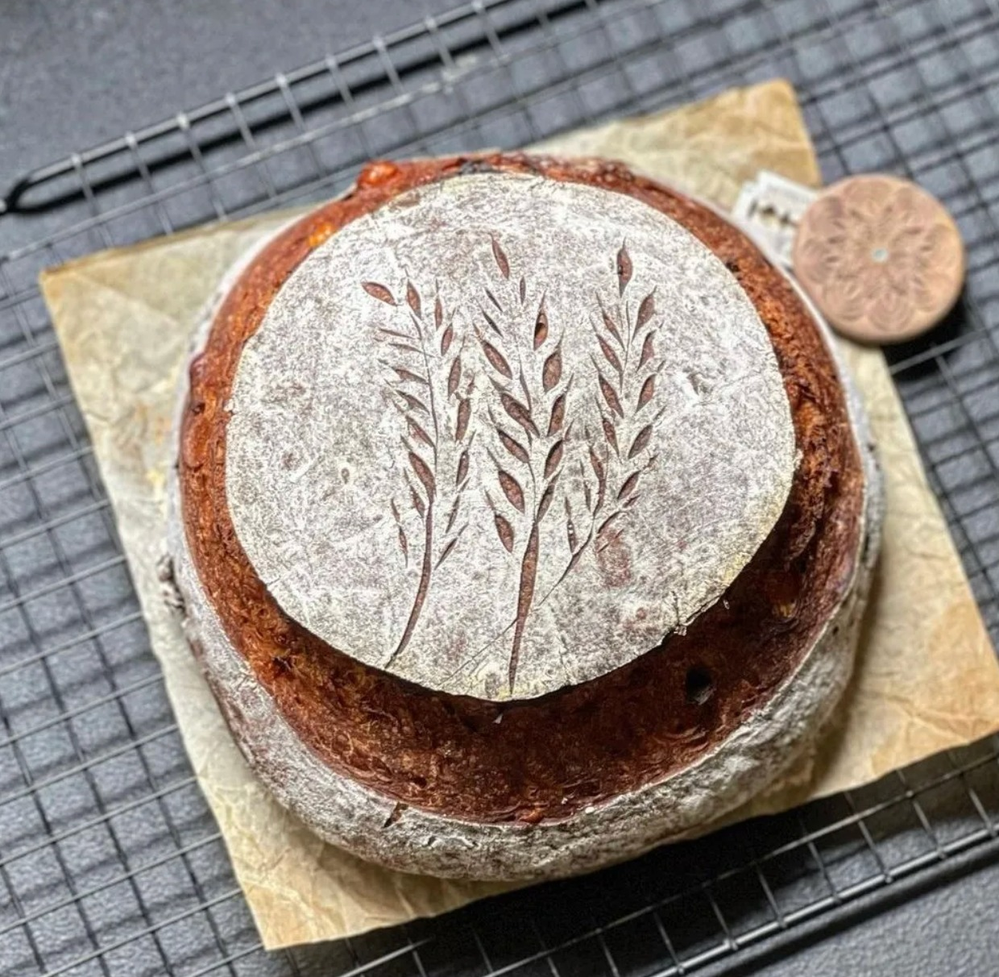
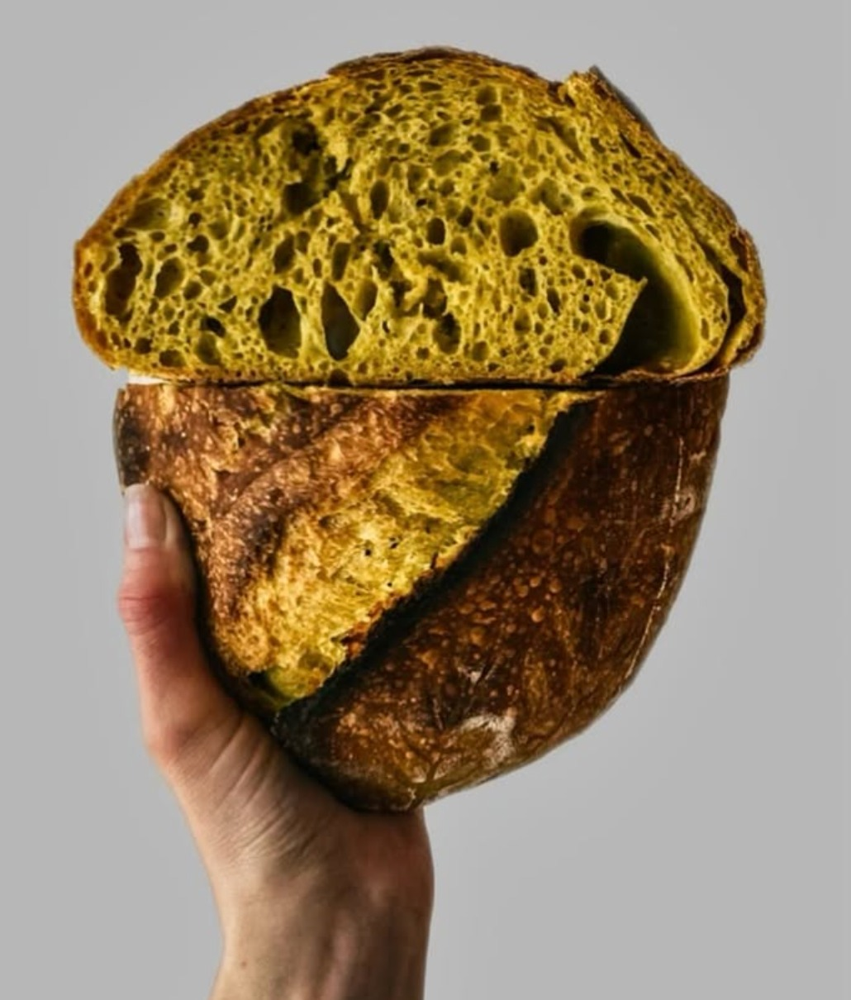
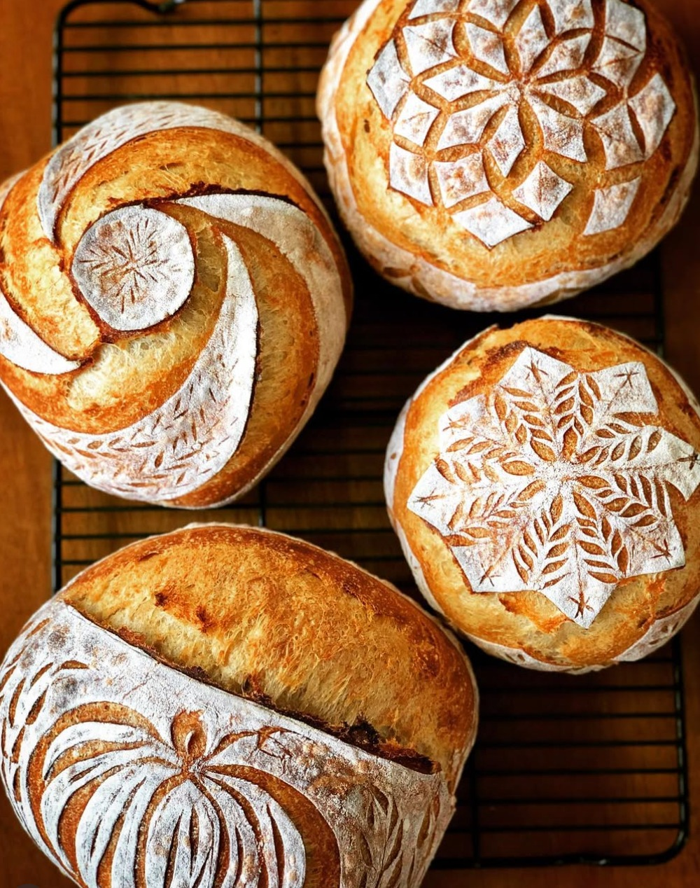
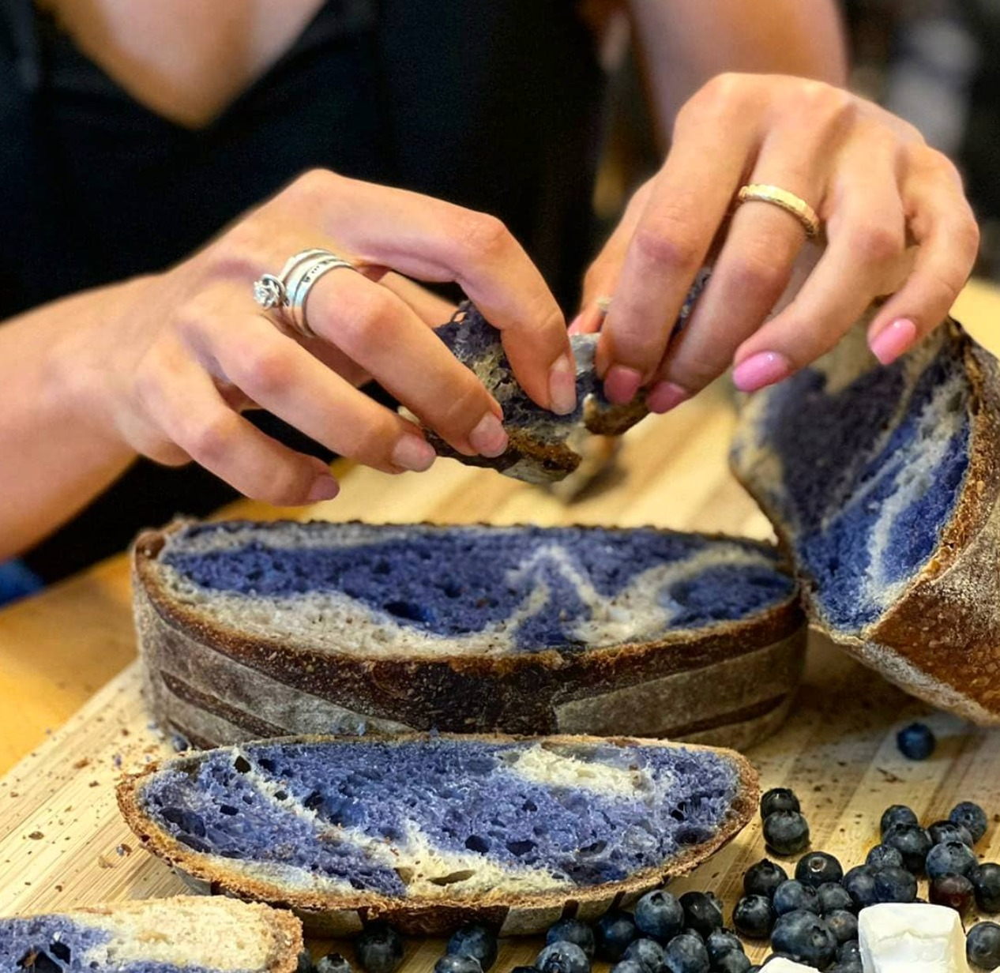

מהנדס מבנים ביום. מתכנת שאור בלילה. אין כאן רומנטיקה של "מטבח חמים", אין סיפורי סבתא. רק קמח, מים, מלח, זמן, ויחס הידרציה מדויק עד עשירית האחוז.

קוראים לי מורגי. ביום אני מחשב עומסים על גשרים. בלילה אני מחשב יחסי הידרציה, טמפרטורת מים, וקצב פעילות שמרים על גרף אקסל.
אני לא אופה. אני מנדס לחם. כל כיכר עוברת תיעוד של 14 משתנים, מהמשקל היבש של הקמח עד לשיפוע הסכין על הקראסט.
התחלתי לפרסם את הגרפים, הכשלונות, וההצלחות באינסטגרם. @dough_engineering הפך ל־42,000 עוקבים בלי שום מאמץ שיווקי. רק תהליך גלוי, אובססיבי, אמיתי.
"אם הגשר לא קורס תחת 500 טון, גם הלחם לא יקרוס תחת חמאה."

תוצאה של 36 שעות תפיחה קרה. לא מקריות. לא "ככה יצא". כל בועה תוכננה.

כל דוגמה משורטטת לפי זוויות, סנטימטרים, ועומק חיתוך. הלחם הוא פני הקראסט.

שאור הידרציה 78% עם פירה אורגני של אוכמניות. צבע טבעי לחלוטין. מתפרק ביד. נטרף ב־12 שניות. מצולם ב־12 דקות.
נשארו 7 כיכרות. כשזה נגמר — נגמר. בלי "אולי נוסיף עוד אחת". בלי רשימת המתנה. שבוע הבא.